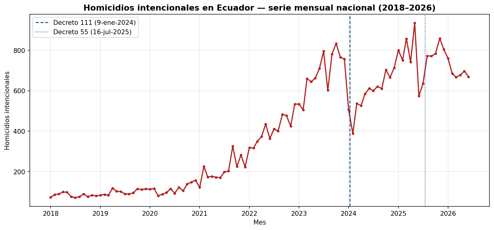
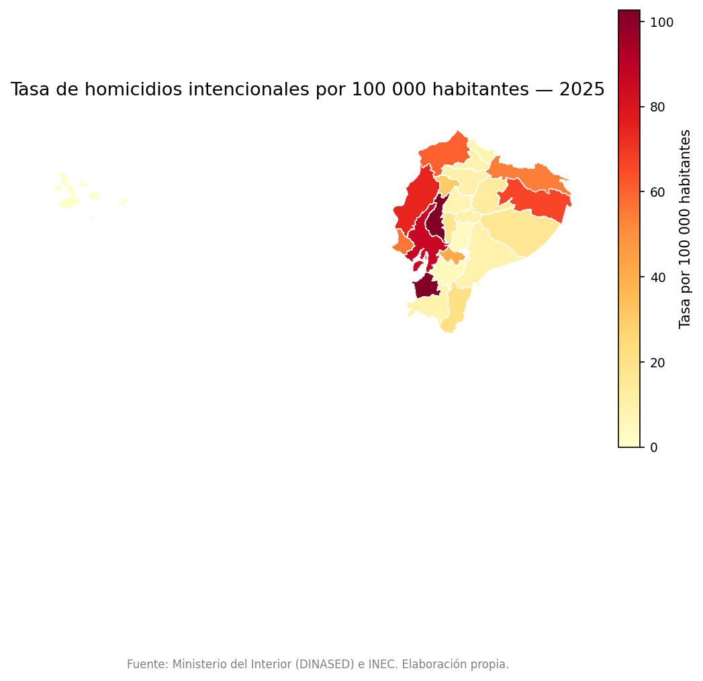
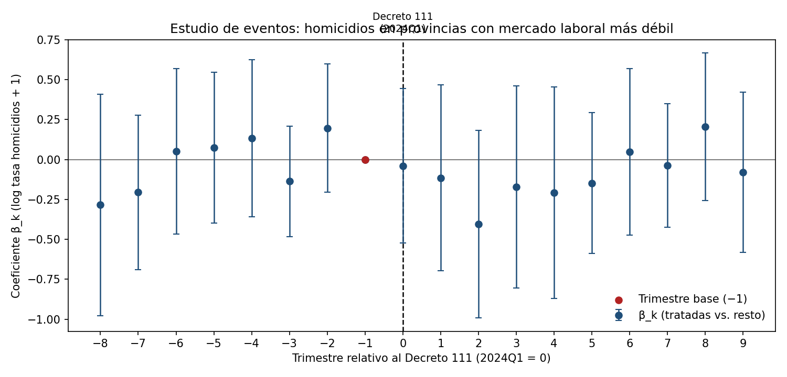
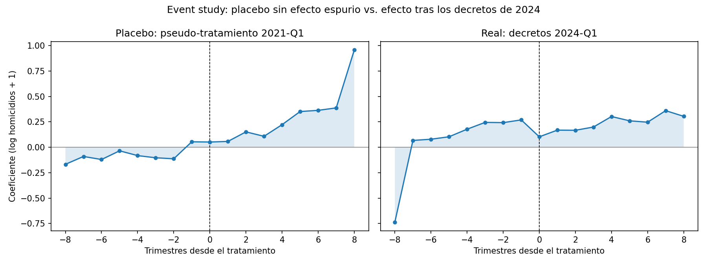

📌 Pregunta de investigación
¿Cómo evolucionó la criminalidad letal (homicidios por 100 000 habitantes) en las provincias de Ecuador entre 2018 y 2026, y qué asociación (no causal) guarda con el deterioro del mercado laboral (desempleo y subempleo por provincia), controlando por heterogeneidad geográfica y temporal?
📊 Hallazgos principales
1. Explosión de homicidios con récord en 2025
La serie nacional pasó de 996 víctimas (2018) a 9 283 (2025); el primer semestre de 2026 suma 4 154. Guayas concentra el 44,2 % del periodo 2018–2025.

2. La ola es nacional, no solo Guayas
Sin Guayas, el crecimiento interanual se mantiene (2025 vs 2024: +34,7 %). El deterioro se extendió a la Costa y la frontera norte.

3. La escalada precedió a los decretos de 2024
El event study del Decreto 111 (ene-2024) no muestra efectos diferenciales significativos; el placebo (2021-Q1) es plano en t≈0 y su repunte tardío coincide con 2023-Q1, inicio real de la ola.

4. Sin efectos espurios: placebo plano
El pseudo-tratamiento en 2021-Q1 no responde en t≈0, lo que refuerza que el diseño no fabrica "efectos" donde no los hay.

🧪 Modelos y resultados honestos
Correlación laboral (ENEMDU 2024-II, N=24)
- Subempleo ↔ homicidios 2025: r = 0,34 (Pearson), ρ = 0,42 (Spearman).
- Desempleo ↔ homicidios: r ≤ 0,18 — asociación débil.
Efectos fijos (un corte ENEMDU → dummies de región)
- Desempleo: β ≈ +0,08 (p ≈ 0,39), no significativo.
- Subempleo: β ≈ −0,04 (p ≈ 0,47), no significativo.
- Con un solo trimestre ENEMDU los FE provincia+periodo no son identificables: se estima el objeto honesto y se documenta.
Control sintético: Esmeraldas
- RMSE pre-tratamiento = 4,78 por 100 000.
- Brecha media post-Decreto 111 = −4,87 (Esmeraldas por debajo de su sintética).
Contraste externo (OECO, PADF)
- Boletín S1-2025: 4 619 homicidios vs dataset oficial 4 659 → Δ ≈ +0,9 %.
- Discrepancia atribuible a cortes de fecha; citado sin copia literal.
📚 Evidencia empírica y política pública
El proyecto incluye un anexo con revisión de literatura académica indexada (Springer, Elsevier, JSTOR, Oxford, Cambridge, NBER/IZA, BID), metodologías robustas de inferencia causal y evaluación de impacto, y recomendaciones accionables para altos funcionarios de gobierno. Las ~110 referencias del anexo tienen DOI verificado contra Crossref (muestra independiente de 62/62).
Qué dice la literatura
- Desempleo↔homicidios: asociación débil y heterogénea (robusta para robos, frágil para homicidios).
- Los picos de homicidios en la región se explican por mercados ilegales, fragmentación de grupos y capacidad estatal.
- Coherente con nuestros resultados: r ≤ 0,34 y efectos fijos laborales no significativos.
Qué recomienda a los tomadores de decisión
- Policía focalizada en puntos calientes; evitar «mano dura» generalizada (evidencia adversa en El Salvador).
- Evaluar el Bono de Desarrollo Humano y los programas de empleo juvenil con estándares causales.
- Crear una unidad de evidencia y evaluación de impacto en seguridad.
📄 Leer el reporte completo (3 capítulos, ~110 referencias verificadas)
📁 Estructura del repositorio
├── notebooks/ 05 notebooks CRISP-DM (01 comprensión → 05 evaluación) ├── notebook_sources/ versiones .py estilo jupytext (regeneran los .ipynb) ├── src/ config, loaders, data_prep, geoprocessing, panel_helpers ├── data/raw/ fuentes oficiales (INEC, Ministerio del Interior, IGM/CONALI) ├── data/processed/ panel provincia-trimestre y tasas ├── reports/figures/ gráficos generados por los notebooks ├── app.py app Streamlit interactiva └── requirements.txt
🔗 Enlaces
Repositorio y código
- GitHub: jordanvt18/ec-empleo-crimen
- README completo (fuentes con fechas, metodología, limitaciones)
- Notebooks ejecutados
- App Streamlit (ejecutar con
streamlit run app.py)
⚠️ Limitaciones
- Cobertura ENEMDU parcial: microdatos provinciales de un trimestre (2024-II); el resto del periodo requiere descarga (patrones documentados en el notebook 03).
- No es causalidad: los efectos fijos no eliminan variables omitidas (inversión en seguridad, grupos armados, migración, informalidad).
- Datos administrativos: los homicidios están sujetos a variaciones según el metadato oficial; Galápagos no reporta homicidios en 2026.
- Denominador proyectado: tasas por 100 000 con proyecciones INEC (revisión 2024, base Censo 2022), no conteos censales puntuales.